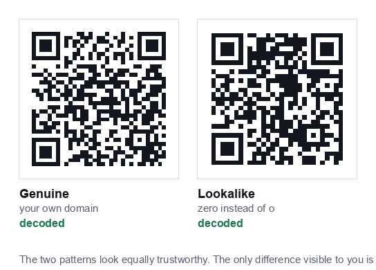

A QR code is a picture of data. It cannot execute anything, install anything, or take control of your phone. Every real QR related security incident comes down to the same thing: the code sent someone to a destination they would not have chosen if they had read the address first.
That makes the risk manageable, because it is the same risk as clicking an unknown link, with one twist, which is that a QR code hides the link until you have already scanned it.
How QR scams actually work
The pattern, sometimes called "quishing", is consistent across the reported cases:
- Sticker overlays. A printed sticker is placed over a legitimate code: on a parking meter, a restaurant table, an EV charger, or a poster. The victim scans what they believe is the official code and lands on a convincing payment page.
- Fake payment requests. The destination imitates a parking or utility payment flow and captures card details.
- Credential phishing. The code opens a login page that looks like a bank, a courier, or a workplace sign in.
- Codes in unsolicited post or email. A letter claiming an unpaid fine, or an email asking you to "verify your account" by scanning, scanning moves the victim onto a personal phone, which often has weaker filtering than a work computer.
- App download prompts. The page pushes an app install from outside the official stores.
Notice what is absent from that list: nothing happens automatically. In every case the victim had to tap a link, then enter something.
The single habit that prevents almost all of this: read the URL preview your camera shows before you tap it. If the domain is not what you expected, do not open it. That one check defeats the entire category.

Warning signs before you tap
Once you scan, your phone shows a preview. Look for:
- A domain that does not match the business. A café's menu should not open a domain you have never heard of.
- Lookalike spelling. Extra words, hyphens, or swapped characters,
paypa1,amaz0n-secure,yourbank-verify. - A shortener you cannot inspect. Legitimate businesses do use them, but a shortener plus an urgent request is a poor combination.
- An unusual top level domain for the context, a local council notice resolving to something exotic.
- Any immediate request for payment or login from a code you did not seek out.
Warning signs on the physical code
Before you even scan, the sticker itself often gives it away:
- A sticker on top of something. Raised edges, a slightly different sheen, or a code that overhangs a printed border.
- Mismatched print quality. A crisp modern sticker on a weathered sign.
- Different alignment or colour from the surrounding material.
- A code with no explanation next to it. Legitimate codes almost always say what they do.
- Peeling corners. Try a fingernail at the edge, official codes are usually printed into the material, not stuck on.
Where the real risk is concentrated
Not all QR codes carry equal risk, and it is worth being proportionate:
| Context | Risk | Why |
|---|---|---|
| Parking meters, EV chargers | High | Payment expected, outdoors, unattended, easy to sticker |
| Unsolicited letters or email | High | You did not initiate it; urgency is manufactured |
| Public posters and flyers | Medium | Easy to tamper with, but rarely payment related |
| Restaurant tables | Low to medium | Staff notice tampering, but tables are unattended at times |
| A code you generated yourself | None | You know exactly what it contains |
| WiFi codes in a private space | Low | No link involved; the worst case is a failed connection |
What QR codes cannot do
Some common fears are simply not accurate, and believing them makes it harder to focus on the real risk:
- A QR code cannot install malware by itself. Scanning shows a link. Installation requires you to download and approve something.
- It cannot access your camera roll, contacts or messages. The scan is a camera reading a pattern, nothing more.
- It cannot make payments on its own. Payment requires you to enter details or approve a transaction.
- It cannot track you merely by being scanned: though the page it opens can, like any website you visit.
One genuine exception worth knowing: a WiFi QR code contains its password in plain text, so anyone who photographs the code can read the password. That is a privacy consideration for where you display it, not a malware risk.
If you think you scanned something malicious
- Close the page. If you only scanned and viewed, you are almost certainly fine.
- Entered card details? Contact your bank now and freeze the card. Speed matters more than certainty.
- Entered a password? Change it on the real site immediately, and anywhere else you reused it. Turn on two factor authentication.
- Installed an app? Uninstall it, then run a security scan. On Android, check that the app does not hold accessibility or device admin permissions.
- Report it: to the business whose code was replaced, and to your national fraud reporting body. Businesses frequently do not know their codes have been tampered with.
If you print QR codes for a business
Your customers' safety and your reputation are the same problem here. Practical protections:
- Do not use loose stickers. Print the code into laminated table talkers, acrylic holders, or the sign itself. A code that cannot be covered easily rarely is.
- Check your codes physically. Add it to a weekly routine, scan a few of your own codes and confirm where they go.
- Use your own domain. A static code pointing at
yourbusiness.com/menushows your name in the scan preview. A third party short link shows a stranger's domain, which trains customers to ignore exactly the check that protects them. This is a real argument for static codes over dynamic ones. - Label every code. "Scan for our menu, opens yourbusiness.com" tells customers what to expect, so a swapped code becomes obvious.
- Never ask for payment by QR code in unsolicited contact. It trains your own customers into the behaviour scammers rely on.
A sensible summary
QR codes are about as safe as links, because that is effectively what they are. The extra risk comes from two things: the destination is hidden until you scan, and physical codes can be swapped.
Both are handled by one habit, read the preview before you tap, plus a little extra caution around codes that ask for payment, codes that arrived unsolicited, and codes in unattended public places.
Codes you generate yourself carry no such risk at all. Everything made on this site is static and built in your browser, so the data is exactly what you typed, with no server or redirect in between, see our privacy policy for how that works.